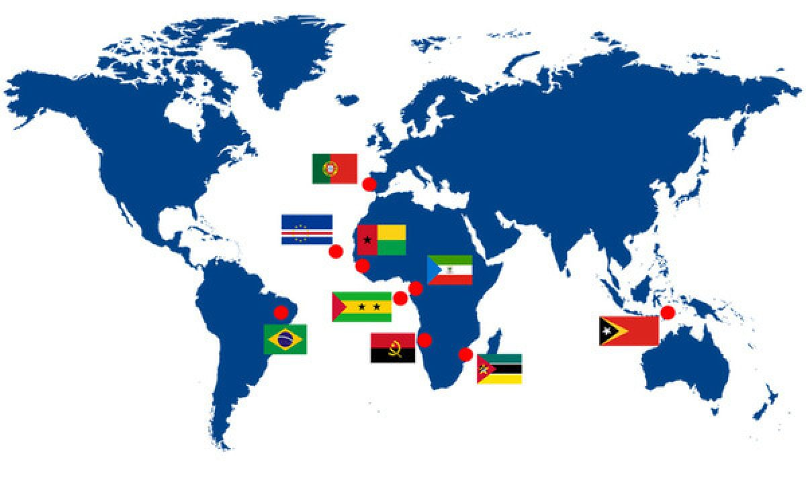

Uma Viagem no Tempo: A História da Língua Portuguesa
A língua portuguesa é uma das mais faladas do mundo, mas você já se perguntou como ela evoluiu ao longo dos séculos? Neste artigo, mergulharemos na fascinante história da língua portuguesa, desde suas raízes latinas até se tornar a língua oficial de vários países. A jornada é repleta de reviravoltas e influências culturais que moldaram a língua que conhecemos hoje.
As Origens: Latim Vulgar e o Português Antigo
A história da língua portuguesa remonta ao latim vulgar, trazido para a Península Ibérica pelos romanos durante a expansão do Império Romano. No entanto, à medida que os séculos avançavam, esse latim vulgar começou a evoluir e a se misturar com influências de povos germânicos e árabes, dando origem ao chamado Português Antigo.
O Português Antigo e a Literatura Medieval
Durante a Idade Média, o Português Antigo se estabeleceu como uma língua literária e administrativa em Portugal. Destacam-se os primeiros documentos escritos em português, como o "Cantigas de Amigo" e as "Cantigas de Santa Maria" do rei Dom Dinis, que são uma parte importante do patrimônio cultural português.
A Expansão Marítima e o Português Moderno
A Era dos Descobrimentos, a partir do século XV, trouxe um período de expansão marítima para Portugal. A língua portuguesa se espalhou para várias partes do mundo, incluindo Brasil, África, Índia e Ásia. Durante essa época, o Português Antigo evoluiu para o que hoje chamamos de Português Moderno.
A Influenência das Línguas Indígenas, Africanas e Outras
Durante a colonização do Brasil, o português interagiu com línguas indígenas e africanas, dando origem a uma rica variedade de dialetos e influências na língua. Muitas palavras e expressões do português brasileiro têm raízes nessas línguas, criando a diversidade linguística característica do país.
A Literatura e a Língua Portuguesa Contemporânea
No mundo contemporâneo, o português é uma língua globalmente relevante, com literatura influente de autores como Machado de Assis, Fernando Pessoa, José Saramago e muitos outros. A língua portuguesa é oficial em vários países, incluindo Portugal, Brasil, Moçambique, Angola, entre outros.
A história da língua portuguesa é uma jornada impressionante, repleta de mudanças e influências que a tornaram o que é hoje. Do latim vulgar ao Português Moderno, a língua portuguesa é um testemunho da riqueza cultural e da evolução linguística. Com uma influência global crescente, o português continua a desempenhar um papel vital na comunicação e na cultura contemporânea.